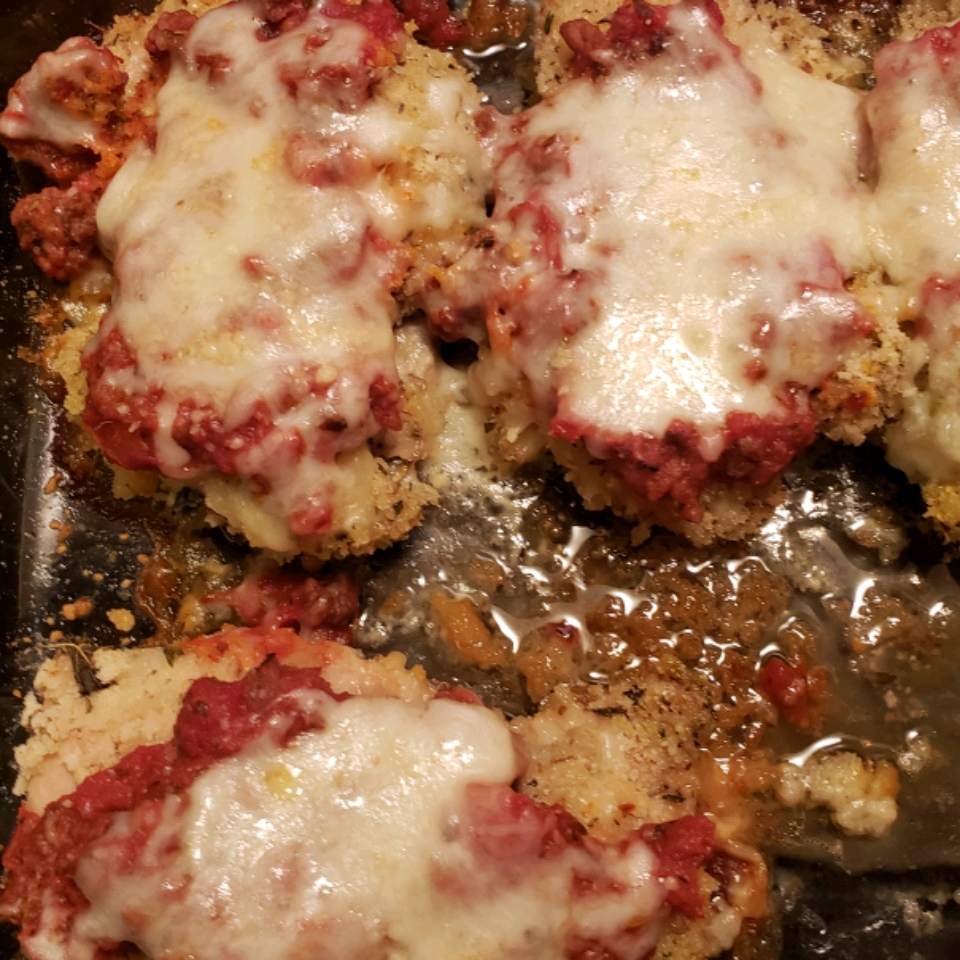

Baked Parmesan Chicken

Description
If you want to know how to make an easy chicken parmesan that doesn't require deep
frying, you came to the right place! This easy chicken dinner is delicious and healthy,
the whole family will love it! It's breaded and baked in the oven, then topped with my
homemade marinara sauce and mozzarella cheese. Serve it over pasta, zucchini noodles,
roasted veggies or with a large salad to keep it on the lighter side.
Ingredients
- canola oil cooking spray
- ½ cup water
- 1 egg, beaten
- 1 ½ cups bread crumbs
- 6 tablespoons grated Parmesan cheese, divided
- 1 tablespoon dried oregano
- 1 teaspoon dried basil
- ½ teaspoon dried thyme
- ½ teaspoon garlic powder
- 6 skinless, boneless chicken breast halves
- 2 cups spaghetti sauce
- 1 cup shredded mozzarella cheese
Steps
- Preheat the oven to 350 degrees F (175 degrees C). Spray a 9x13-inch baking dish with cooking spray.
- Whisk water and egg together in a bowl until smooth. Combine bread crumbs, 2 tablespoons Parmesan cheese, oregano, basil, thyme, and garlic powder in a separate bowl.
- Dip each chicken breast in egg mixture, allowing excess egg to drip back into bowl. Coat each chicken breast in bread crumb mixture, shaking off excess. Repeat dipping each coated chicken breast in egg mixture and the bread crumb mixture for a double-coating and place in the prepared baking dish. Spray breaded chicken breasts with cooking spray.
- Bake in the preheated oven for 40 minutes. Pour spaghetti sauce over each chicken breast and top each with mozzarella cheese and remaining Parmesan cheese. Continue baking until chicken is no longer pink in the center and the cheeses are melted, about 15 minutes more. An instant-read thermometer inserted into the center should read at least 165 degrees F (74 degrees C).